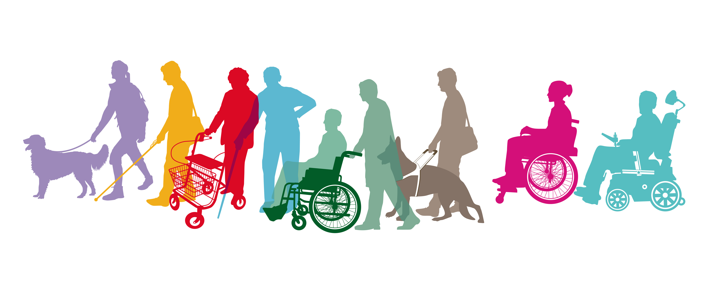

I løpet av en dag møter man mange forskjellige typer av design, men alle er ikke nødvendig universielt designet.
Det finnes mange teknologiske løsinger som gjør hverdagen lettere for folk flest. Løsninger som tavler på bussholdeplassen
og liknende er teknologiske løsninger som gjør livet vårt enklere. Det er dog. slik at de fleste sikkert ikke tenker over at
den teknoligien som gjør livet enklere for enkelt individet, nødvendigvis ikke gjør det lettere for alle. Mange løsninger er
defor ikke universiellt utviklede, ettersom mennesker med ulike funksjonshemninger ikke vil kunne bruke dem.

- Heis: Heisen blir brukt nærmest hver eneste dag. Det er kanskje bare latskap, men å kunne velge heis ovenfor trapp sørger for
at man blir mindre sliten og varm f.eks. Det er en universelt designet teknologi som har aspekter som fungerer for de fleste
mennesker, da det er bla. punktskrift og rullestolvennlig.
- Bussen: Å kunne velge buss istedenfor å gå, korter ned på reisetiden og gjør det mye enklere å komme seg fra a til b. De har
blant annet gjort at bussene lener seg til opphøyde busstopp for å gjøre det enkelt for rullestol brukere å komme seg på.
Bussen har også både tavler og lyd som forteller hvor lenge det er til og hvilket stopp som er neste. (National Disability Authority, 2014).
- Trafikklysene i forgjenger overganger: Vi bruker dem hver dag, og samhandler hvem som kjører når, og at fotgjengere kan passere
veien trygt. Disse har innebygde funksjoner som gjør at signalene kan oppfattes av alle. Den har både lyssignal for døve, lydsignal
for blinde, og knapper som gir deg bedre tid for funksjonshemmede.